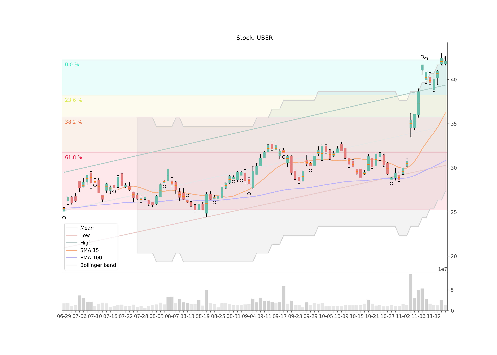

Technical analysis of stock data
In order to deepen my knowledge of the current master lectures Data Analytics and Predictive Analytics, I was looking for a project in my spare time, which is suitable for statistical analysis. Last year I was busy writing a script that automatically processes, visualizes and sends me the performance of stocks after the close of the trading day via e-mail. In order to have more indicators to evaluate stocks, I decided to get into the technical analysis of stocks. My goal was to determine further indicators that could be used for a data-based valuation of stocks and their prices. Also to get an overview of the performance of a stock based on last week's values, which I can interpret over the weekend. In the following I wanted to describe the first results of my analysis, which I want to expand on in the coming weeks.
# Technical details
I basically use the same technologies as when I last dealt with the topic. As programming language I use Python. As API for stock price queries I use Alpha Vantage. This allows five free requests per minute, which is enough for a first test of my application. Pandas offers a suitable data analytics framework for processing large tabular data sets. Scipy also offered itself for the processing of data.
# Current results
To visualize the stock data I created a box plot, where positive trends (close larger than open) are displayed in green and negative trends (close smaller than open) in red. For this I use Matplotlib. The volume of transactions is also shown in a subplot below.
To illustrate trends I calculated and visualized trend lines, which show the trends of the high and low values and the mean value of the close prices. With the help of linear regression I have created an intercept and slope of the respective functions and determined all data points of the time values. High and low trends are also shifted by its standard deviation in the respective direction.
Two moving averages were calculated and visualized to determine golden cross, death cross and crossover indicators. One is the Simple Moving Average (SMA) based on a time window of 15 days, the other an Expontential Moving Average (EMA) based on a 100 day time window.
Based on an SMA consisting of a 20-day time window, a Bollinger Band was calculated and displayed, which represents likely limits of price trends.
Common Fibonacci Retracement levels were also calculated to represent certain limits for support and resistance. For this purpose, the global maximum and minimum of the current time window were identified, the difference between them was multiplied by ratios of 23.6%, 38.2%, 61.8% and subtracted from the maximum.
# Outlook
In the next few weeks I would like to delve further into the topic of technical analysis in order to be able to calculate and present further indicators. As far as the visualization of performance is concerned, I am currently satisfied. My focus will now be more on interpreting all visualized data using calculated indicators. I would also like to perform a prediction of the data using RNN/LSTM algorithms.
You can check out my current code in my Github repository.
Type
Freetime project
Tools
Python, Pandas, Scipy, Matplotlib, Alpha Vantage API
Partners
None
Date
2020-11-19
Source